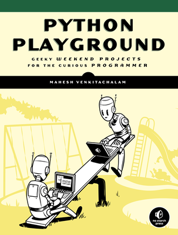

Why you should try Python Playground
Do you see anything other than random dots?

How our brain works

How we can build autostereograms
Depth maps
Get a depth map
Create a "random dot" tile
Create a new image by repeating the tile with dimentions matching the depth map
Shift each pixel of the tile image to the right by amount proportional to the depth value associated with the pixel